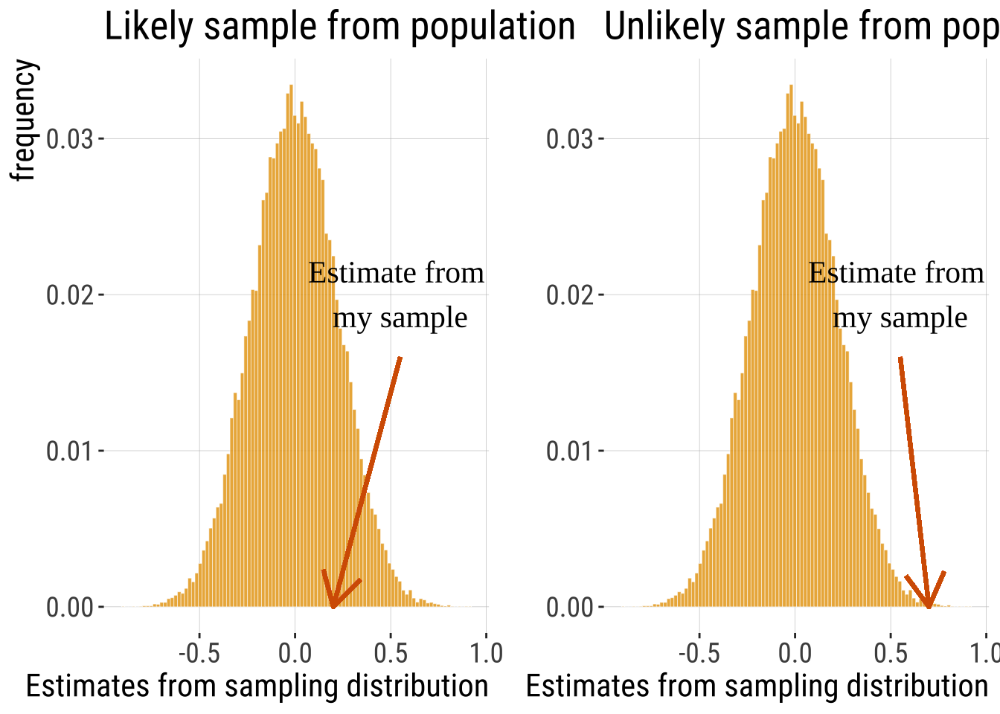
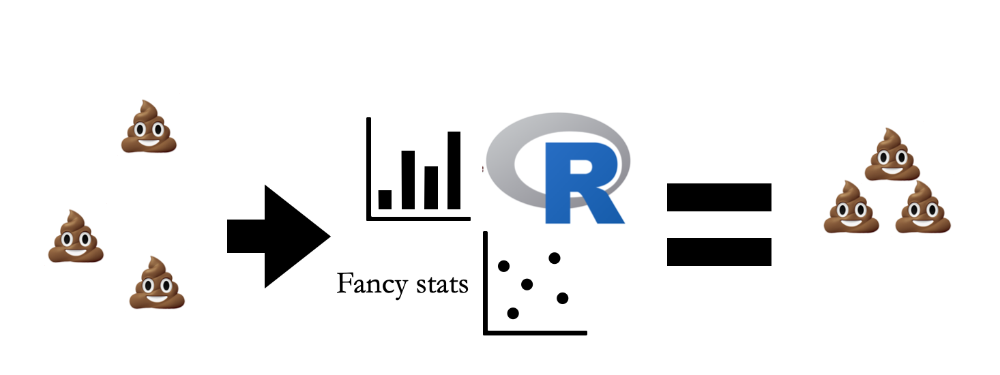
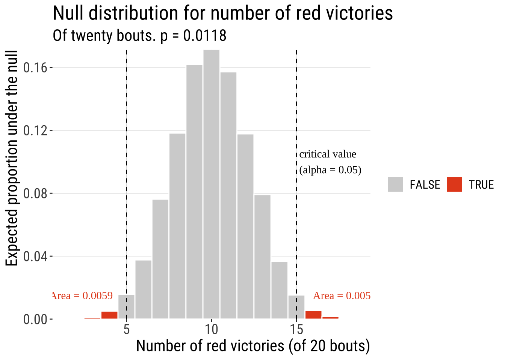

5.1.Hypothesis Testing
General framework | Acknowledgments: Y. Brandvain’s code snippets
Keywords
Hypothesis Testing
Key learning goals
- Be able to describe the Null Hypothesis.
- Understand the practice of Null Hypothesis Significance Testing.
- Master the meaning of a P-value.
- Have the basis to be critical and skeptical of P-values.
- Explain the concepts of false positives and false negatives and why they happen.
- Understand when to use one vs two-tailed tests.
- Understand the relationship between p-values and CIs
Outline
- Intro to hypothesis testing
- Example of hypothesis testing step-by-step
- Type I and type II errors in hypothesis testing
- Cautionary tales
- Philosophical/historical digression/discussion about p-values (will post extra optional readings)
- Estimation vs. hypothesis testing
Hypothesis Testing
In addition to estimation, hypothesis testing is a major goal of statistics.
Example Hypotheses:
- Does a treatment have an effect?
- Are two groups different?
- Do the number of problems grow with a person’s income?
Statistical hypothesis testing automates decision making
Statistical hypothesis (null and alternative) \(neq\) Scientific hypothesis (statements about the existence and possible causes of natural phenomena)
The Dilemma
We take samples to understand the world out there.
So, can our estimates be simply explained by chance, or are they special?
The solution
We can only take a sample and make estimates.
We can imagine taking infinite samples from a population
Build a sampling dist. from a boring population we can describe.
Where would or estimate fall on this distribution
Critical Assumption
Hypothesis testing assumes random sampling – or that we account for non-random sampling in building the null model.
Repeat after me:
. . .
Hypothesis tests account for sampling error, NOT for sampling bias.

Null Hypothesis
Hypotheses are about POPULATIONS
We conduct hypothesis testing by checking if our estimate is surprising (unlikely) under the null model.
The hypothesis is about the population - not about your sample.
The null hypothesis (\(H_0\)) skeptically argues that data come from a boring population described by the null model.
Building a sampling distribution from the appropriate null model is key to hypothesis testing.
We ask
Is the population from which we sampled different from a boring population?
## Warning in geom_segment(aes(x = 0.55, xend = 0.2, y = 0.016, yend = 0), : All aesthetics have length 1, but the data has 50000 rows.
## ℹ Please consider using `annotate()` or provide this layer with data containing
## a single row.
## Warning in geom_segment(aes(x = 0.55, xend = 0.7, y = 0.016, yend = 0), : All aesthetics have length 1, but the data has 50000 rows.
## ℹ Please consider using `annotate()` or provide this layer with data containing
## a single row.
The null hypothesis: Definition
Null hypothesis: a specific statement about a boring population made for the sake of argument (aka — the skeptical view).
A Good 😒 Null Hypothesis: 😒
Reflects all aspects of the null / boring population, except those posed by \(H_0\)
Asks “Can the results be easily explained by chance?”
Would be interesting if proven wrong.
Reflects the process of sampling.
😒 \(H_0\) 😒 is specific, 🤓 \(H_A\) 🤓 is not.
What does this mean?
It means that a null hypothesis specifies a model that can be used to build a sampling distribution
- For example: \(\mu = 0\) and \(\sigma^2 = 1\) or \(\mu_{pop1} = \mu_{pop2}\).
By contrast the alternative hypothesis is less specific.
- That is, “The sample does not come from a population with the parameter specified by the null model” or “x > y” etc…
Caution: Remember Why We Do Stats!
Our goal is to learn about the World Out There (the population) from our finite view (the sample)
Rejecting the null hypothesis is not our goal (although it can be satisfying / exciting).
Hypothesis testing example: red vs blue wrestlers
“Real world” question: Does wearing a red shirt help win a wrestling match
First: Turn this into a more “statistical” question, gather some data, and get to work!
The questions
Question: Does red influence the outcome of wrestling, taekwondo, and boxing?
Clearer (statistical) question: are the colors of outfits won by wrestlers predictors of victory/defeat?
“Scientific” question: could be something about the impact of the color red on aggression levels, hormones, neurotransmitters, etc.
The experiment and results
Data / experiment:
- 16 of 20 rounds had more red-shirted than blue-shirted winners in in the 2004 Olympics.
- Shirt color was randomly assigned.
- Interpretation: Potentially related to red as a sign of aggression in animals?
The Steps of Hypothesis Testing
State \(H_0\) and \(H_A\).
Calculate a test statistic.
Generate the null distribution.
Find critical value at specified \(\alpha\), and the p-value.
Decide:
Reject the \(H_0\) if the test stat is \(\geq\) the critical value (\(p\leq\alpha\)).
OR
Fail to reject \(H_0\) if the test stat is \(<\) the critical value (\(p>\alpha\)).
Notice that step 5 makes this a YES/NO kind of answer in the end, rather than a quantification of the effect of red on victories
1.State \(H_0\) and \(H_a\)
Are the colors of outfits won by wrestlers predictors of victory/defeat?
\(H_0\): Red and blue-shirted athletes are equally likely to win (proportion of red among winners \(= 0.5\)). (notice how this is very specific)
\(H_a\): Red & blue-shirted athletes are not equally likely to win (proportion of red among winners \(\neq 0.5\)). (not specific)
One of these must be true. One is very specific, the other is not. Which one do the data support?
2. Calculate a Test Statistic
16 of 20 rounds had more red-shirted than blue-shirted winners.
Our test statistic here the difference between our observation (16 of 20 wins) and our expectation (10 of twenty wins).
Note: Test statistics: numbers calculated from the data and used to compare out results with those expected under the null hypothesis. They are variable and are related to the type of test we use. E.g. the statistic \(\chi^2\) (chi-square) is the test statistic used in the \(\chi^2\) test; the one-sample t-test uses the \(t\) statistic, etc.
3. Generate the Null Distribution
This is a binomial distribution, which we will learn about next week.
4-5: Find the critical Value & P-Value
- What is the probability of obtaining data as extreme or more extreme (in relation to the null distribution) than the one I obtained?
- If the probability is very low, we reject the null hypothesis
- If it is not, we fail to reject the null
- Because finding the critical value depends on the sampling distribution, we will not go into it now but we will once we talk about specific tests. In this problem specifically we are trying to find \(P(X\geq 16 \text{ OR }X \leq 4)\)
- More formally, we use a significance level (\(\alpha\)): a probability used as criterion to reject the \(H_0\).
